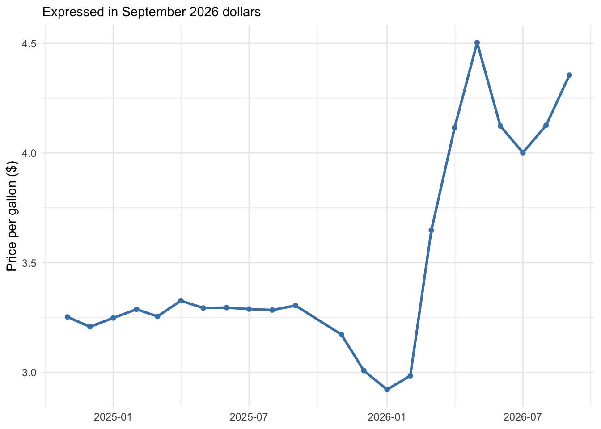
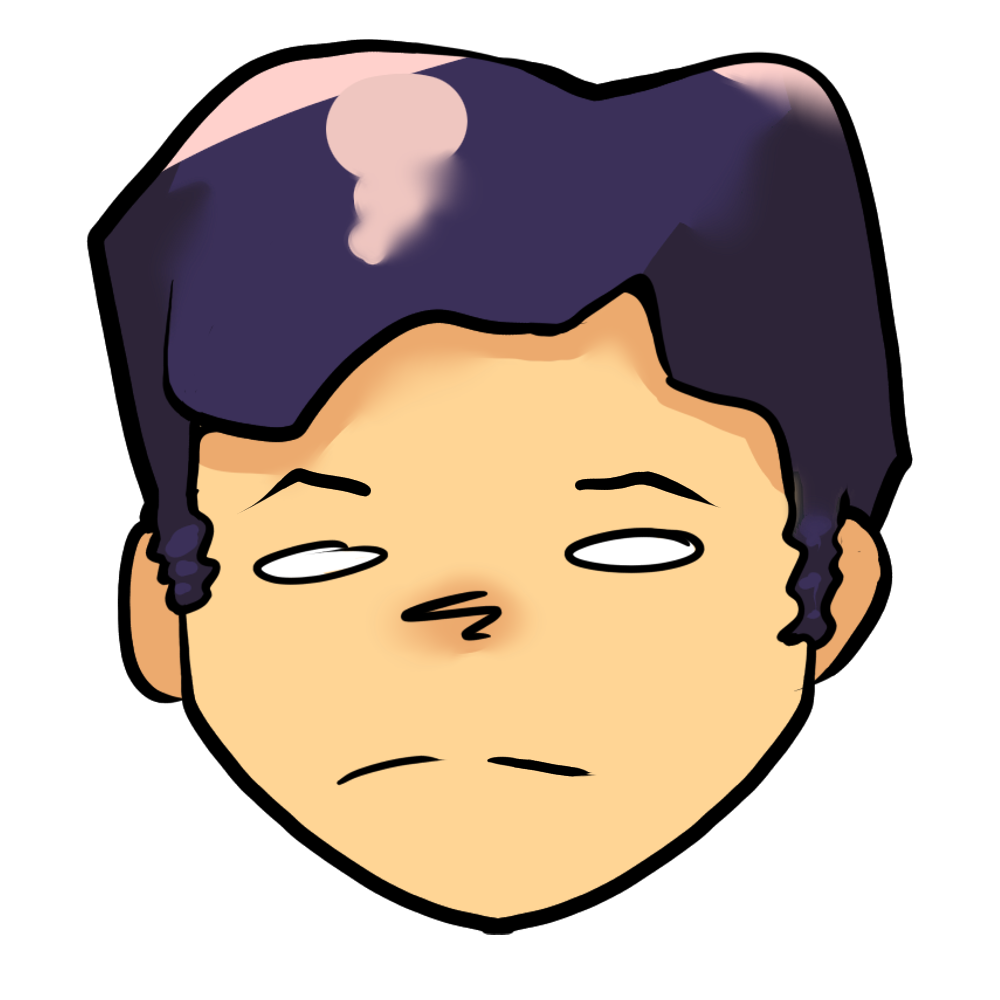

Pump and Prosper
Gasoline Prices and Economic Well-Being Across the United States
Abstract
TEST
Introduction
NEED TEXT HERE
Our research questions
[REFINE THESE TO MATCH VISUALS]
- How have real gasoline prices evolved across the United States?
- Which states and regions have experienced the largest increases?
- How have changes in gasoline prices affected affordability relative to earnings?
Explore our findings
The evolution of gasoline prices
Regional differences
Gasoline affordability
Contributors
- Scraped Gas Price and Federal Reserve Data
- Coded interactive gas price summary table
- Created visuals and formatting for Blog

- Contribution 1
- Contribution 2
- Contribution 3
- Contribution 1
- Contribution 2
- Contribution 3
Software and Resources
Our approach to data wrangling, statistical analysis, and visualization draws upon the methods introduced in Modern Data Science with R (Baumer et al. 2021).
Data wrangling and analysis were conducted in R using tidyverse. Visualizations were developed using ggplot2, plotly, sf, and maps. Interactive tables were constructed using DT.
The website was developed using Quarto.
References
American Automobile Association (n.d.). “AAA Gas Prices.”
Baumer, B. S., Kaplan, D. T., and Horton, N. J. (2021), Modern data science with R, Chapman; Hall/CRC.
Greathouse, J. A. (2026), “AAAGas: Daily state-level gasoline prices,” GitHub.
U.S. Bureau of Labor Statistics (2026a), “Consumer price index for all urban consumers: All items in u.s. City average,” Federal Reserve Bank of St. Louis, FRED.
U.S. Bureau of Labor Statistics (2026e), “State unemployment rates,” Federal Reserve Bank of St. Louis, FRED.
U.S. Bureau of Labor Statistics (2026b), “Average weekly earnings of all employees: Total private,” Federal Reserve Bank of St. Louis, FRED.
U.S. Bureau of Labor Statistics (2026c), “Average weekly hours of all employees: Total private,” Federal Reserve Bank of St. Louis, FRED.
U.S. Bureau of Labor Statistics (2026d), “State labor force participation rates,” Federal Reserve Bank of St. Louis, FRED.
U.S. Energy Information Administration (2026), “The regional differences in gasoline prices this memorial day,” Available at https://www.eia.gov/todayinenergy/detail.php?id=67706.